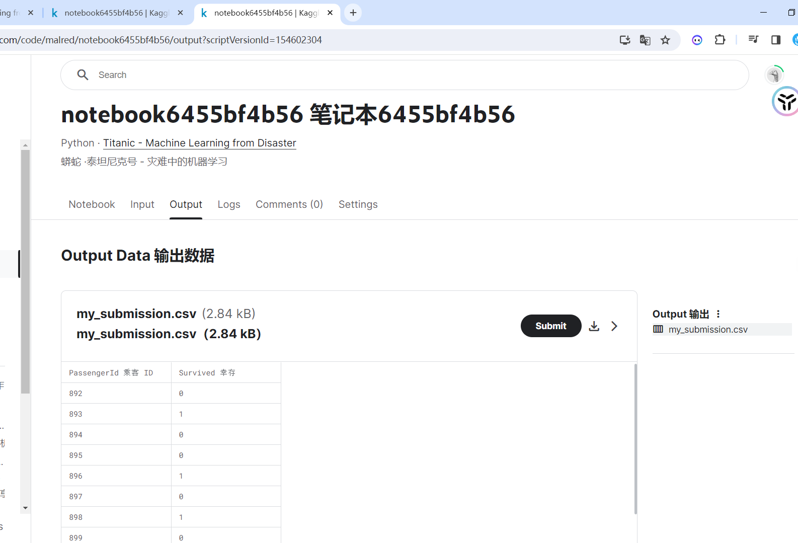

day1
new notebook">
# %% [code] {"execution":{"iopub.status.busy":"2023-12-11T22:32:02.493508Z","iopub.execute_input":"2023-12-11T22:32:02.494444Z","iopub.status.idle":"2023-12-11T22:32:02.948334Z","shell.execute_reply.started":"2023-12-11T22:32:02.494401Z","shell.execute_reply":"2023-12-11T22:32:02.947249Z"}}
# This Python 3 environment comes with many helpful analytics libraries installed
# It is defined by the kaggle/python Docker image: https://github.com/kaggle/docker-python
# For example, here's several helpful packages to load
import numpy as np # linear algebra
import pandas as pd # data processing, CSV file I/O (e.g. pd.read_csv)
# Input data files are available in the read-only "../input/" directory
# For example, running this (by clicking run or pressing Shift+Enter) will list all files under the input directory
import os
for dirname, _, filenames in os.walk('/kaggle/input'):
for filename in filenames:
print(os.path.join(dirname, filename))
# You can write up to 20GB to the current directory (/kaggle/working/) that gets preserved as output when you create a version using "Save & Run All"
# You can also write temporary files to /kaggle/temp/, but they won't be saved outside of the current session
# %% [code] {"execution":{"iopub.status.busy":"2023-12-11T22:33:30.138310Z","iopub.execute_input":"2023-12-11T22:33:30.139549Z","iopub.status.idle":"2023-12-11T22:33:30.163506Z","shell.execute_reply.started":"2023-12-11T22:33:30.139497Z","shell.execute_reply":"2023-12-11T22:33:30.162620Z"}}
train_data = pd.read_csv('/kaggle/input/titanic/train.csv')
# %% [code] {"execution":{"iopub.status.busy":"2023-12-11T22:33:35.662051Z","iopub.execute_input":"2023-12-11T22:33:35.662416Z","iopub.status.idle":"2023-12-11T22:33:35.687825Z","shell.execute_reply.started":"2023-12-11T22:33:35.662388Z","shell.execute_reply":"2023-12-11T22:33:35.686875Z"}}
train_data.head()
# %% [code] {"execution":{"iopub.status.busy":"2023-12-11T22:34:03.864242Z","iopub.execute_input":"2023-12-11T22:34:03.864689Z","iopub.status.idle":"2023-12-11T22:34:03.878425Z","shell.execute_reply.started":"2023-12-11T22:34:03.864653Z","shell.execute_reply":"2023-12-11T22:34:03.877339Z"}}
test_data = pd.read_csv('/kaggle/input/titanic/test.csv')
# %% [code] {"execution":{"iopub.status.busy":"2023-12-11T22:34:11.147152Z","iopub.execute_input":"2023-12-11T22:34:11.148337Z","iopub.status.idle":"2023-12-11T22:34:11.165179Z","shell.execute_reply.started":"2023-12-11T22:34:11.148290Z","shell.execute_reply":"2023-12-11T22:34:11.163944Z"}}
test_data.head()
# %% [code] {"execution":{"iopub.status.busy":"2023-12-11T22:39:06.964120Z","iopub.execute_input":"2023-12-11T22:39:06.965295Z","iopub.status.idle":"2023-12-11T22:39:06.979892Z","shell.execute_reply.started":"2023-12-11T22:39:06.965245Z","shell.execute_reply":"2023-12-11T22:39:06.978764Z"}}
# 假设女性都存活了, 是否正确
women = train_data.loc[train_data.Sex == 'female']['Survived']
women, sum(women), len(women)
# %% [code] {"execution":{"iopub.status.busy":"2023-12-11T22:39:41.835149Z","iopub.execute_input":"2023-12-11T22:39:41.836412Z","iopub.status.idle":"2023-12-11T22:39:41.840556Z","shell.execute_reply.started":"2023-12-11T22:39:41.836372Z","shell.execute_reply":"2023-12-11T22:39:41.839736Z"}}
rate_women = sum(women)/len(women)
# %% [code] {"execution":{"iopub.status.busy":"2023-12-11T22:42:07.830301Z","iopub.execute_input":"2023-12-11T22:42:07.830729Z","iopub.status.idle":"2023-12-11T22:42:07.840346Z","shell.execute_reply.started":"2023-12-11T22:42:07.830695Z","shell.execute_reply":"2023-12-11T22:42:07.839302Z"}}
# 和上面两句效果一样
women = train_data[train_data.Sex=='female'].Survived
rate_women = sum(women)/len(women)
rate_women
# %% [code] {"execution":{"iopub.status.busy":"2023-12-11T22:42:55.007771Z","iopub.execute_input":"2023-12-11T22:42:55.008188Z","iopub.status.idle":"2023-12-11T22:42:55.016813Z","shell.execute_reply.started":"2023-12-11T22:42:55.008145Z","shell.execute_reply":"2023-12-11T22:42:55.015917Z"}}
men = train_data[train_data.Sex=='male'].Survived
rate_men = sum(men)/len(men)
rate_men
# %% [code] {"execution":{"iopub.status.busy":"2023-12-11T22:43:53.160683Z","iopub.execute_input":"2023-12-11T22:43:53.161084Z","iopub.status.idle":"2023-12-11T22:43:53.167198Z","shell.execute_reply.started":"2023-12-11T22:43:53.161054Z","shell.execute_reply":"2023-12-11T22:43:53.165957Z"}}
print('% of women who survived:',rate_women)
print('% of men who survived:',rate_men)
# %% [code]
# %% [code] {"execution":{"iopub.status.busy":"2023-12-11T22:32:02.493508Z","iopub.execute_input":"2023-12-11T22:32:02.494444Z","iopub.status.idle":"2023-12-11T22:32:02.948334Z","shell.execute_reply.started":"2023-12-11T22:32:02.494401Z","shell.execute_reply":"2023-12-11T22:32:02.947249Z"},"jupyter":{"outputs_hidden":false}}
# This Python 3 environment comes with many helpful analytics libraries installed
# It is defined by the kaggle/python Docker image: https://github.com/kaggle/docker-python
# For example, here's several helpful packages to load
import numpy as np # linear algebra
import pandas as pd # data processing, CSV file I/O (e.g. pd.read_csv)
# Input data files are available in the read-only "../input/" directory
# For example, running this (by clicking run or pressing Shift+Enter) will list all files under the input directory
import os
for dirname, _, filenames in os.walk('/kaggle/input'):
for filename in filenames:
print(os.path.join(dirname, filename))
# You can write up to 20GB to the current directory (/kaggle/working/) that gets preserved as output when you create a version using "Save & Run All"
# You can also write temporary files to /kaggle/temp/, but they won't be saved outside of the current session
# %% [code] {"execution":{"iopub.status.busy":"2023-12-11T22:33:30.138310Z","iopub.execute_input":"2023-12-11T22:33:30.139549Z","iopub.status.idle":"2023-12-11T22:33:30.163506Z","shell.execute_reply.started":"2023-12-11T22:33:30.139497Z","shell.execute_reply":"2023-12-11T22:33:30.162620Z"},"jupyter":{"outputs_hidden":false}}
train_data = pd.read_csv('/kaggle/input/titanic/train.csv')
# %% [code] {"execution":{"iopub.status.busy":"2023-12-11T22:33:35.662051Z","iopub.execute_input":"2023-12-11T22:33:35.662416Z","iopub.status.idle":"2023-12-11T22:33:35.687825Z","shell.execute_reply.started":"2023-12-11T22:33:35.662388Z","shell.execute_reply":"2023-12-11T22:33:35.686875Z"},"jupyter":{"outputs_hidden":false}}
train_data.head()
# %% [code] {"execution":{"iopub.status.busy":"2023-12-11T22:34:03.864242Z","iopub.execute_input":"2023-12-11T22:34:03.864689Z","iopub.status.idle":"2023-12-11T22:34:03.878425Z","shell.execute_reply.started":"2023-12-11T22:34:03.864653Z","shell.execute_reply":"2023-12-11T22:34:03.877339Z"},"jupyter":{"outputs_hidden":false}}
test_data = pd.read_csv('/kaggle/input/titanic/test.csv')
# %% [code] {"execution":{"iopub.status.busy":"2023-12-11T22:34:11.147152Z","iopub.execute_input":"2023-12-11T22:34:11.148337Z","iopub.status.idle":"2023-12-11T22:34:11.165179Z","shell.execute_reply.started":"2023-12-11T22:34:11.148290Z","shell.execute_reply":"2023-12-11T22:34:11.163944Z"},"jupyter":{"outputs_hidden":false}}
test_data.head()
# %% [code] {"execution":{"iopub.status.busy":"2023-12-11T22:39:06.964120Z","iopub.execute_input":"2023-12-11T22:39:06.965295Z","iopub.status.idle":"2023-12-11T22:39:06.979892Z","shell.execute_reply.started":"2023-12-11T22:39:06.965245Z","shell.execute_reply":"2023-12-11T22:39:06.978764Z"},"jupyter":{"outputs_hidden":false}}
# 假设女性都存活了, 是否正确
women = train_data.loc[train_data.Sex == 'female']['Survived']
women, sum(women), len(women)
# %% [code] {"execution":{"iopub.status.busy":"2023-12-11T22:39:41.835149Z","iopub.execute_input":"2023-12-11T22:39:41.836412Z","iopub.status.idle":"2023-12-11T22:39:41.840556Z","shell.execute_reply.started":"2023-12-11T22:39:41.836372Z","shell.execute_reply":"2023-12-11T22:39:41.839736Z"},"jupyter":{"outputs_hidden":false}}
rate_women = sum(women)/len(women)
# %% [code] {"execution":{"iopub.status.busy":"2023-12-11T22:42:07.830301Z","iopub.execute_input":"2023-12-11T22:42:07.830729Z","iopub.status.idle":"2023-12-11T22:42:07.840346Z","shell.execute_reply.started":"2023-12-11T22:42:07.830695Z","shell.execute_reply":"2023-12-11T22:42:07.839302Z"},"jupyter":{"outputs_hidden":false}}
# 和上面两句效果一样
women = train_data[train_data.Sex=='female'].Survived
rate_women = sum(women)/len(women)
rate_women
# %% [code] {"execution":{"iopub.status.busy":"2023-12-11T22:42:55.007771Z","iopub.execute_input":"2023-12-11T22:42:55.008188Z","iopub.status.idle":"2023-12-11T22:42:55.016813Z","shell.execute_reply.started":"2023-12-11T22:42:55.008145Z","shell.execute_reply":"2023-12-11T22:42:55.015917Z"},"jupyter":{"outputs_hidden":false}}
men = train_data[train_data.Sex=='male'].Survived
rate_men = sum(men)/len(men)
rate_men
# %% [code] {"execution":{"iopub.status.busy":"2023-12-11T22:43:53.160683Z","iopub.execute_input":"2023-12-11T22:43:53.161084Z","iopub.status.idle":"2023-12-11T22:43:53.167198Z","shell.execute_reply.started":"2023-12-11T22:43:53.161054Z","shell.execute_reply":"2023-12-11T22:43:53.165957Z"},"jupyter":{"outputs_hidden":false}}
print('% of women who survived:',rate_women)
print('% of men who survived:',rate_men)
# %% [markdown] {"jupyter":{"outputs_hidden":false},"execution":{"iopub.status.busy":"2023-12-11T23:01:17.091721Z","iopub.execute_input":"2023-12-11T23:01:17.092118Z","iopub.status.idle":"2023-12-11T23:01:17.097473Z","shell.execute_reply.started":"2023-12-11T23:01:17.092088Z","shell.execute_reply":"2023-12-11T23:01:17.096352Z"}}
# # 使用机器学习模型 -- 决策树
# %% [code] {"execution":{"iopub.status.busy":"2023-12-11T23:02:01.314767Z","iopub.execute_input":"2023-12-11T23:02:01.315182Z","iopub.status.idle":"2023-12-11T23:02:02.012268Z","shell.execute_reply.started":"2023-12-11T23:02:01.315122Z","shell.execute_reply":"2023-12-11T23:02:02.010962Z"}}
from sklearn.ensemble import RandomForestClassifier
# %% [code] {"execution":{"iopub.status.busy":"2023-12-11T23:02:37.045441Z","iopub.execute_input":"2023-12-11T23:02:37.045886Z","iopub.status.idle":"2023-12-11T23:02:37.055013Z","shell.execute_reply.started":"2023-12-11T23:02:37.045848Z","shell.execute_reply":"2023-12-11T23:02:37.053893Z"}}
target = train_data['Survived']
target
# %% [code] {"execution":{"iopub.status.busy":"2023-12-11T23:03:14.551327Z","iopub.execute_input":"2023-12-11T23:03:14.551767Z","iopub.status.idle":"2023-12-11T23:03:14.557127Z","shell.execute_reply.started":"2023-12-11T23:03:14.551734Z","shell.execute_reply":"2023-12-11T23:03:14.555936Z"}}
# 选择特征
features = ['Pclass','Sex','SibSp','Parch']
train_data[features]
# %% [code] {"execution":{"iopub.status.busy":"2023-12-11T23:06:07.231472Z","iopub.execute_input":"2023-12-11T23:06:07.231934Z","iopub.status.idle":"2023-12-11T23:06:07.244606Z","shell.execute_reply.started":"2023-12-11T23:06:07.231898Z","shell.execute_reply":"2023-12-11T23:06:07.243572Z"}}
X = pd.get_dummies(train_data[features]) # 性别这个特征(value: female,male)被量化 -> 0 1
X_test = pd.get_dummies(test_data[features]) # 性别这个特征(value: female,male)被量化 -> 0 1
# %% [code] {"execution":{"iopub.status.busy":"2023-12-11T23:06:16.053825Z","iopub.execute_input":"2023-12-11T23:06:16.054246Z","iopub.status.idle":"2023-12-11T23:06:16.069163Z","shell.execute_reply.started":"2023-12-11T23:06:16.054210Z","shell.execute_reply":"2023-12-11T23:06:16.067934Z"}}
X,X_test
# %% [code] {"execution":{"iopub.status.busy":"2023-12-11T23:07:44.208870Z","iopub.execute_input":"2023-12-11T23:07:44.209256Z","iopub.status.idle":"2023-12-11T23:07:44.464527Z","shell.execute_reply.started":"2023-12-11T23:07:44.209227Z","shell.execute_reply":"2023-12-11T23:07:44.463689Z"}}
# 分类器
model = RandomForestClassifier(n_estimators=100,max_depth=5,random_state=1)
model.fit(X, target)
predictions = model.predict(X_test)
# %% [code] {"execution":{"iopub.status.busy":"2023-12-11T23:07:51.493348Z","iopub.execute_input":"2023-12-11T23:07:51.494465Z","iopub.status.idle":"2023-12-11T23:07:51.503617Z","shell.execute_reply.started":"2023-12-11T23:07:51.494415Z","shell.execute_reply":"2023-12-11T23:07:51.502465Z"}}
predictions
# %% [code] {"execution":{"iopub.status.busy":"2023-12-11T23:09:23.563271Z","iopub.execute_input":"2023-12-11T23:09:23.563695Z","iopub.status.idle":"2023-12-11T23:09:23.575016Z","shell.execute_reply.started":"2023-12-11T23:09:23.563664Z","shell.execute_reply":"2023-12-11T23:09:23.573800Z"}}
output = pd.DataFrame({'PassengerId': test_data.PassengerId, 'Survived': predictions})
output.to_csv('my_submission.csv',index=False)
# %% [code] {"execution":{"iopub.status.busy":"2023-12-11T23:09:46.431461Z","iopub.execute_input":"2023-12-11T23:09:46.431939Z","iopub.status.idle":"2023-12-11T23:09:46.442163Z","shell.execute_reply.started":"2023-12-11T23:09:46.431905Z","shell.execute_reply":"2023-12-11T23:09:46.440918Z"}}
output.head()

# %% [code] {"jupyter":{"outputs_hidden":false},"execution":{"iopub.status.busy":"2023-12-12T00:24:20.116590Z","iopub.execute_input":"2023-12-12T00:24:20.116929Z","iopub.status.idle":"2023-12-12T00:24:20.461576Z","shell.execute_reply.started":"2023-12-12T00:24:20.116899Z","shell.execute_reply":"2023-12-12T00:24:20.460371Z"}}
# This Python 3 environment comes with many helpful analytics libraries installed
# It is defined by the kaggle/python Docker image: https://github.com/kaggle/docker-python
# For example, here's several helpful packages to load
import numpy as np # linear algebra
import pandas as pd # data processing, CSV file I/O (e.g. pd.read_csv)
# Input data files are available in the read-only "../input/" directory
# For example, running this (by clicking run or pressing Shift+Enter) will list all files under the input directory
import os
for dirname, _, filenames in os.walk('/kaggle/input'):
for filename in filenames:
print(os.path.join(dirname, filename))
# You can write up to 20GB to the current directory (/kaggle/working/) that gets preserved as output when you create a version using "Save & Run All"
# You can also write temporary files to /kaggle/temp/, but they won't be saved outside of the current session
# %% [code] {"jupyter":{"outputs_hidden":false},"execution":{"iopub.status.busy":"2023-12-12T00:24:20.463905Z","iopub.execute_input":"2023-12-12T00:24:20.464337Z","iopub.status.idle":"2023-12-12T00:24:20.486897Z","shell.execute_reply.started":"2023-12-12T00:24:20.464307Z","shell.execute_reply":"2023-12-12T00:24:20.485811Z"}}
train_data = pd.read_csv('/kaggle/input/titanic/train.csv')
# %% [code] {"jupyter":{"outputs_hidden":false},"execution":{"iopub.status.busy":"2023-12-12T00:24:20.490322Z","iopub.execute_input":"2023-12-12T00:24:20.490688Z","iopub.status.idle":"2023-12-12T00:24:20.516680Z","shell.execute_reply.started":"2023-12-12T00:24:20.490657Z","shell.execute_reply":"2023-12-12T00:24:20.515794Z"}}
train_data.head()
# %% [code] {"jupyter":{"outputs_hidden":false},"execution":{"iopub.status.busy":"2023-12-12T00:24:20.517792Z","iopub.execute_input":"2023-12-12T00:24:20.518062Z","iopub.status.idle":"2023-12-12T00:24:20.530694Z","shell.execute_reply.started":"2023-12-12T00:24:20.518039Z","shell.execute_reply":"2023-12-12T00:24:20.529314Z"}}
test_data = pd.read_csv('/kaggle/input/titanic/test.csv')
# %% [code] {"jupyter":{"outputs_hidden":false},"execution":{"iopub.status.busy":"2023-12-12T00:24:20.534205Z","iopub.execute_input":"2023-12-12T00:24:20.534834Z","iopub.status.idle":"2023-12-12T00:24:20.548282Z","shell.execute_reply.started":"2023-12-12T00:24:20.534797Z","shell.execute_reply":"2023-12-12T00:24:20.547152Z"}}
test_data.head()
# %% [code] {"jupyter":{"outputs_hidden":false},"execution":{"iopub.status.busy":"2023-12-12T00:24:20.550215Z","iopub.execute_input":"2023-12-12T00:24:20.550658Z","iopub.status.idle":"2023-12-12T00:24:20.566911Z","shell.execute_reply.started":"2023-12-12T00:24:20.550625Z","shell.execute_reply":"2023-12-12T00:24:20.565824Z"}}
# 假设女性都存活了, 是否正确
women = train_data.loc[train_data.Sex == 'female']['Survived']
women, sum(women), len(women)
# %% [code] {"jupyter":{"outputs_hidden":false},"execution":{"iopub.status.busy":"2023-12-12T00:24:20.568076Z","iopub.execute_input":"2023-12-12T00:24:20.568354Z","iopub.status.idle":"2023-12-12T00:24:20.573419Z","shell.execute_reply.started":"2023-12-12T00:24:20.568326Z","shell.execute_reply":"2023-12-12T00:24:20.572495Z"}}
rate_women = sum(women)/len(women)
# %% [code] {"jupyter":{"outputs_hidden":false},"execution":{"iopub.status.busy":"2023-12-12T00:24:20.575318Z","iopub.execute_input":"2023-12-12T00:24:20.576099Z","iopub.status.idle":"2023-12-12T00:24:20.588739Z","shell.execute_reply.started":"2023-12-12T00:24:20.576063Z","shell.execute_reply":"2023-12-12T00:24:20.587859Z"}}
# 和上面两句效果一样
women = train_data[train_data.Sex=='female'].Survived
rate_women = sum(women)/len(women)
rate_women
# %% [code] {"jupyter":{"outputs_hidden":false},"execution":{"iopub.status.busy":"2023-12-12T00:24:20.589930Z","iopub.execute_input":"2023-12-12T00:24:20.590378Z","iopub.status.idle":"2023-12-12T00:24:20.602119Z","shell.execute_reply.started":"2023-12-12T00:24:20.590351Z","shell.execute_reply":"2023-12-12T00:24:20.601006Z"}}
men = train_data[train_data.Sex=='male'].Survived
rate_men = sum(men)/len(men)
rate_men
# %% [code] {"jupyter":{"outputs_hidden":false},"execution":{"iopub.status.busy":"2023-12-12T00:24:20.603450Z","iopub.execute_input":"2023-12-12T00:24:20.604021Z","iopub.status.idle":"2023-12-12T00:24:20.613281Z","shell.execute_reply.started":"2023-12-12T00:24:20.603988Z","shell.execute_reply":"2023-12-12T00:24:20.611903Z"}}
print('% of women who survived:',rate_women)
print('% of men who survived:',rate_men)
# %% [markdown] {"jupyter":{"outputs_hidden":false},"execution":{"iopub.status.busy":"2023-12-11T23:01:17.091721Z","iopub.execute_input":"2023-12-11T23:01:17.092118Z","iopub.status.idle":"2023-12-11T23:01:17.097473Z","shell.execute_reply.started":"2023-12-11T23:01:17.092088Z","shell.execute_reply":"2023-12-11T23:01:17.096352Z"}}
# # 使用机器学习模型 -- 决策树
# %% [code] {"jupyter":{"outputs_hidden":false},"execution":{"iopub.status.busy":"2023-12-12T00:24:20.614556Z","iopub.execute_input":"2023-12-12T00:24:20.614814Z","iopub.status.idle":"2023-12-12T00:24:22.359386Z","shell.execute_reply.started":"2023-12-12T00:24:20.614792Z","shell.execute_reply":"2023-12-12T00:24:22.358014Z"}}
from sklearn.ensemble import RandomForestClassifier
# %% [code] {"jupyter":{"outputs_hidden":false},"execution":{"iopub.status.busy":"2023-12-12T00:24:22.363362Z","iopub.execute_input":"2023-12-12T00:24:22.363767Z","iopub.status.idle":"2023-12-12T00:24:22.373035Z","shell.execute_reply.started":"2023-12-12T00:24:22.363739Z","shell.execute_reply":"2023-12-12T00:24:22.371809Z"}}
target = train_data['Survived']
target
# %% [code] {"jupyter":{"outputs_hidden":false},"execution":{"iopub.status.busy":"2023-12-12T00:24:22.374770Z","iopub.execute_input":"2023-12-12T00:24:22.375089Z","iopub.status.idle":"2023-12-12T00:24:22.402740Z","shell.execute_reply.started":"2023-12-12T00:24:22.375063Z","shell.execute_reply":"2023-12-12T00:24:22.401456Z"}}
# 选择特征
features = ['Pclass','Sex','SibSp','Parch','Age']
train_data[features]
# %% [code] {"jupyter":{"outputs_hidden":false},"execution":{"iopub.status.busy":"2023-12-12T00:24:22.406387Z","iopub.execute_input":"2023-12-12T00:24:22.406698Z","iopub.status.idle":"2023-12-12T00:24:22.426299Z","shell.execute_reply.started":"2023-12-12T00:24:22.406674Z","shell.execute_reply":"2023-12-12T00:24:22.424812Z"}}
X = pd.get_dummies(train_data[features].fillna(-1)) # 性别这个特征(value: female,male)被量化 -> 0 1
X_test = pd.get_dummies(test_data[features].fillna(-1)) # 性别这个特征(value: female,male)被量化 -> 0 1
# %% [code] {"jupyter":{"outputs_hidden":false},"execution":{"iopub.status.busy":"2023-12-12T00:24:22.427615Z","iopub.execute_input":"2023-12-12T00:24:22.427916Z","iopub.status.idle":"2023-12-12T00:24:22.447834Z","shell.execute_reply.started":"2023-12-12T00:24:22.427881Z","shell.execute_reply":"2023-12-12T00:24:22.445969Z"}}
X,X_test
# %% [code] {"jupyter":{"outputs_hidden":false},"execution":{"iopub.status.busy":"2023-12-12T00:24:22.450079Z","iopub.execute_input":"2023-12-12T00:24:22.450393Z","iopub.status.idle":"2023-12-12T00:24:22.633590Z","shell.execute_reply.started":"2023-12-12T00:24:22.450366Z","shell.execute_reply":"2023-12-12T00:24:22.632217Z"}}
# 分类器
model = RandomForestClassifier(n_estimators=250,max_depth=7,random_state=1)
model.fit(X, target)
predictions = model.predict(X_test)
# %% [code] {"jupyter":{"outputs_hidden":false},"execution":{"iopub.status.busy":"2023-12-12T00:24:22.635559Z","iopub.execute_input":"2023-12-12T00:24:22.635964Z","iopub.status.idle":"2023-12-12T00:24:22.643214Z","shell.execute_reply.started":"2023-12-12T00:24:22.635928Z","shell.execute_reply":"2023-12-12T00:24:22.642210Z"}}
predictions
# %% [code] {"jupyter":{"outputs_hidden":false},"execution":{"iopub.status.busy":"2023-12-12T00:24:22.644916Z","iopub.execute_input":"2023-12-12T00:24:22.645320Z","iopub.status.idle":"2023-12-12T00:24:22.662265Z","shell.execute_reply.started":"2023-12-12T00:24:22.645287Z","shell.execute_reply":"2023-12-12T00:24:22.660506Z"}}
output = pd.DataFrame({'PassengerId': test_data.PassengerId, 'Survived': predictions})
output.to_csv('my_submission.csv',index=False)
# %% [code] {"jupyter":{"outputs_hidden":false},"execution":{"iopub.status.busy":"2023-12-12T00:24:22.663780Z","iopub.execute_input":"2023-12-12T00:24:22.664710Z","iopub.status.idle":"2023-12-12T00:24:22.679552Z","shell.execute_reply.started":"2023-12-12T00:24:22.664674Z","shell.execute_reply":"2023-12-12T00:24:22.678179Z"}}
output.head()
# %% [code] {"jupyter":{"outputs_hidden":false}}
day2
day3
day8